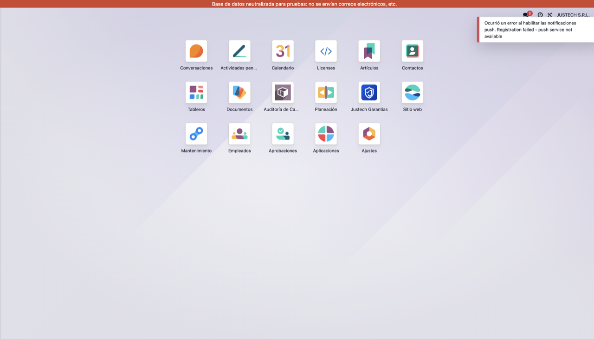
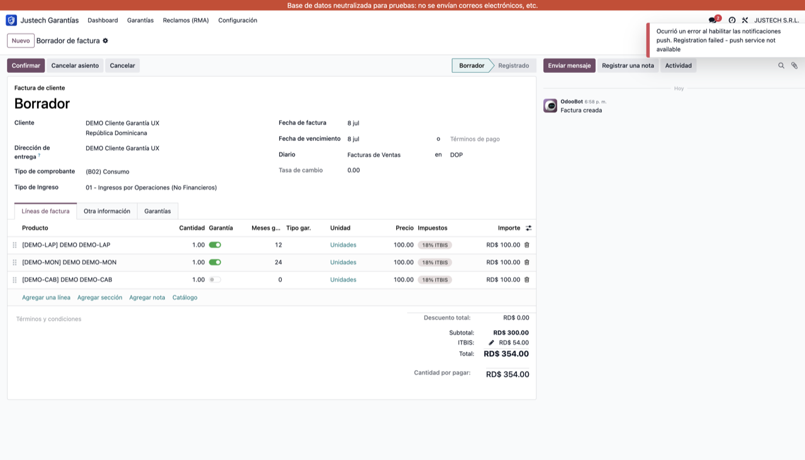
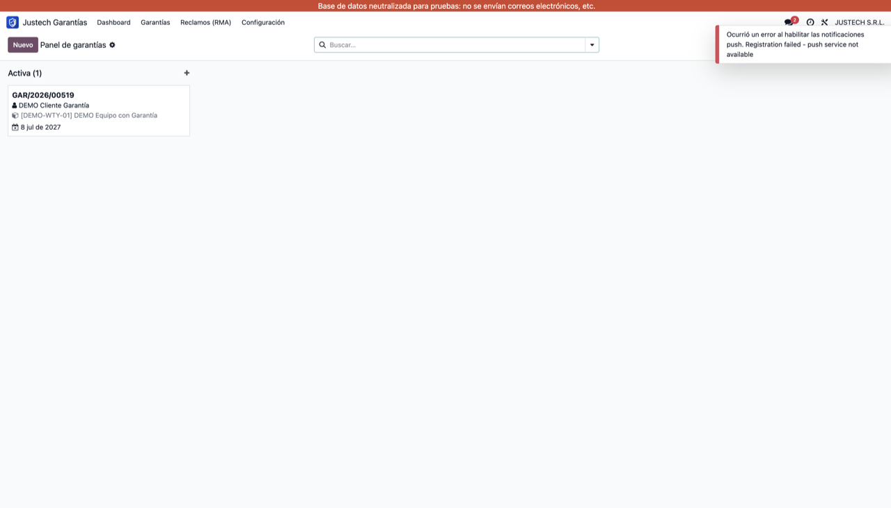
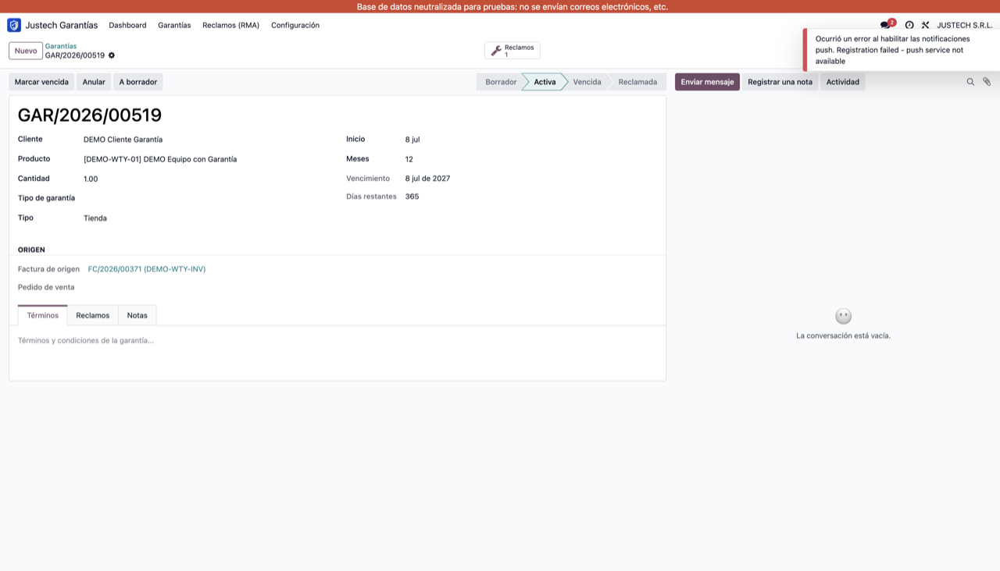
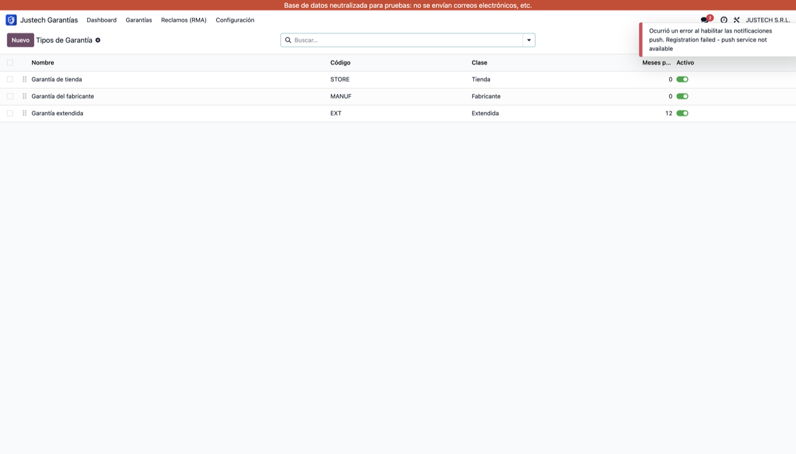

Controle el ciclo de vida completo de las garantías de sus productos: registro con vigencia calculada, duración por producto, generación automática desde la factura, seguimiento por número de serie, reclamos (RMA) y trazabilidad total. Parte de la base estándar de módulos Justgroup.
Ofrecer una gestión de garantías clara, auditable y automatizada, integrada de forma nativa con el flujo comercial de Odoo, reduciendo el trabajo manual y los errores en el registro y seguimiento de garantías y reclamos.

Configure la garantía por línea en Líneas de factura con solo tres columnas: Garantía (sí/no), Meses y Tipo. Las fechas de vigencia y el número de serie se gestionan en el módulo de Garantías.




stock.lot).Justech · Base estándar de módulos Justgroup · Licencia LGPL-3